SUNDAY HUG
우리 아기를 위한 올바른 각도
듀얼 역류방지쿠션
특허받은 듀얼 각도로 허리에 무리 없는 편안한 환경
특허받은 듀얼 각도로 허리에 무리 없는 편안한 환경
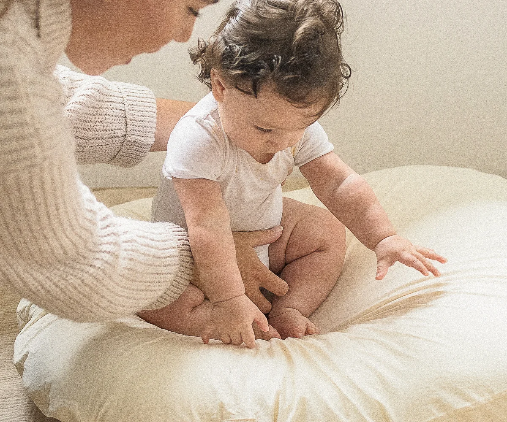

적정 각도를
형성하고 있나요?
아기 엉덩이가
바닥에 닿지 않나요?
허리에 무리한
굴곡이 없나요?

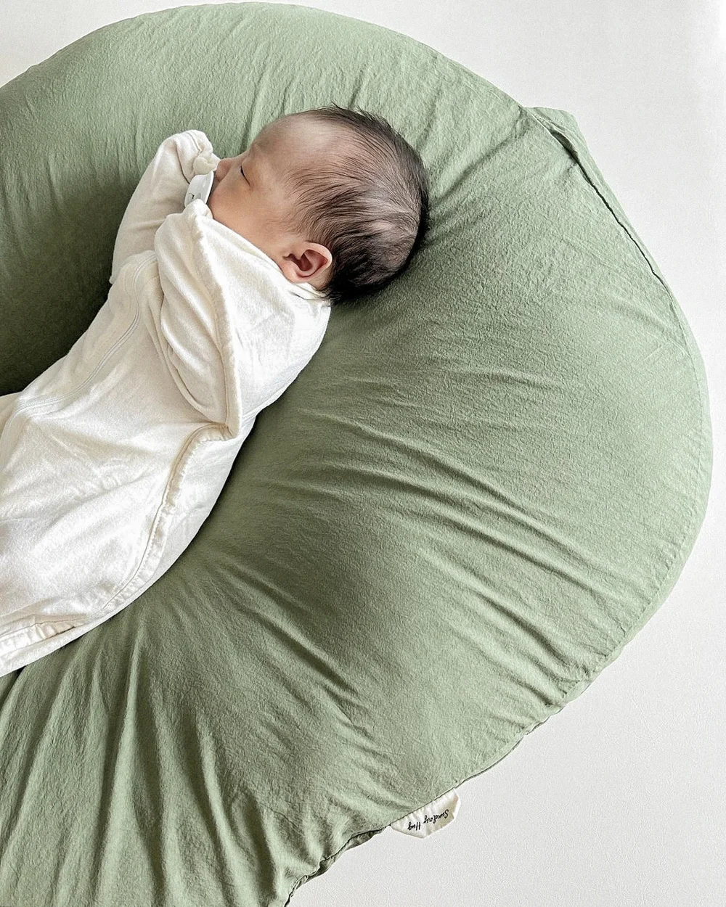
신생아에게 적합
쿠션 지지부가 아래쪽 위치
쿠션 커버로 아기를 안정적으로 지지
체중이 무거운 아기
쿠션 지지부가 위쪽에 위치
커버 & 속통이 이중으로 지지
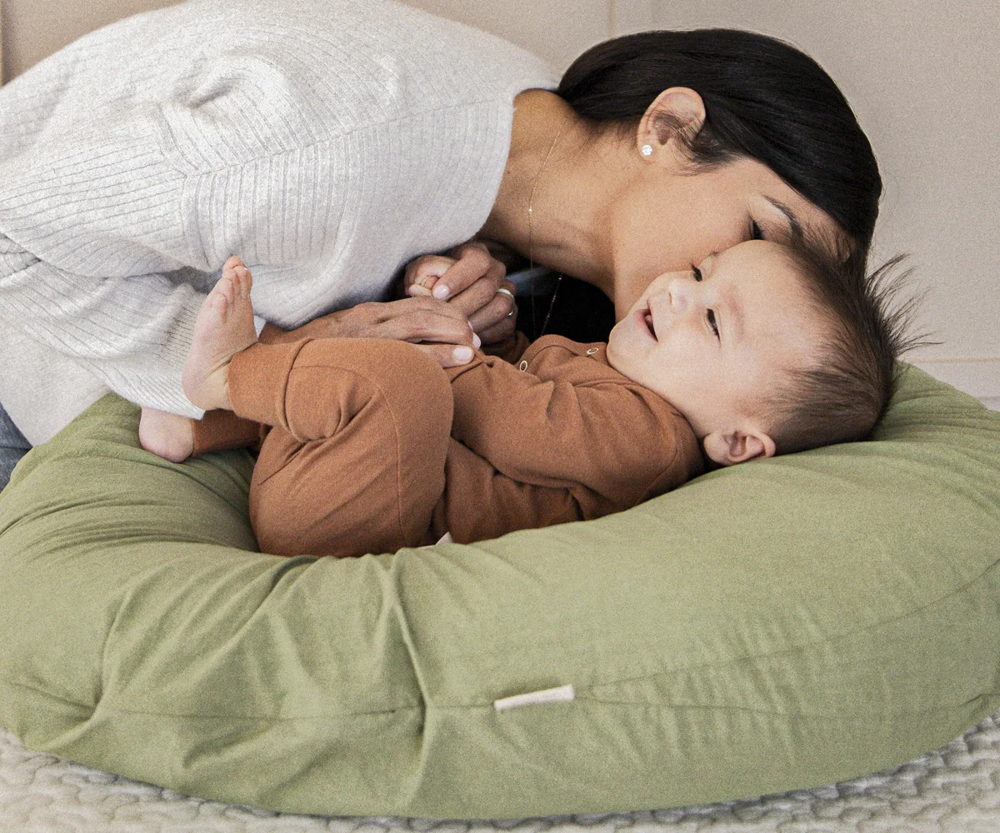
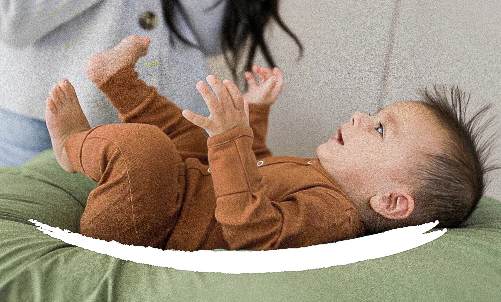
원단부터 봉제까지
직접 생산
먼지 걱정 없이
안심 사용
복원력 뛰어난
프리미엄 충전재
"아기의 숙면이 곧
SUNDAY HUG
부모의 휴식입니다."
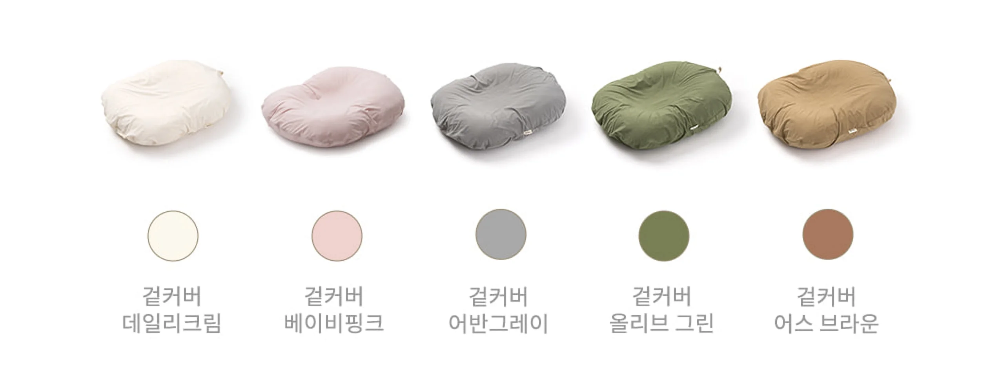
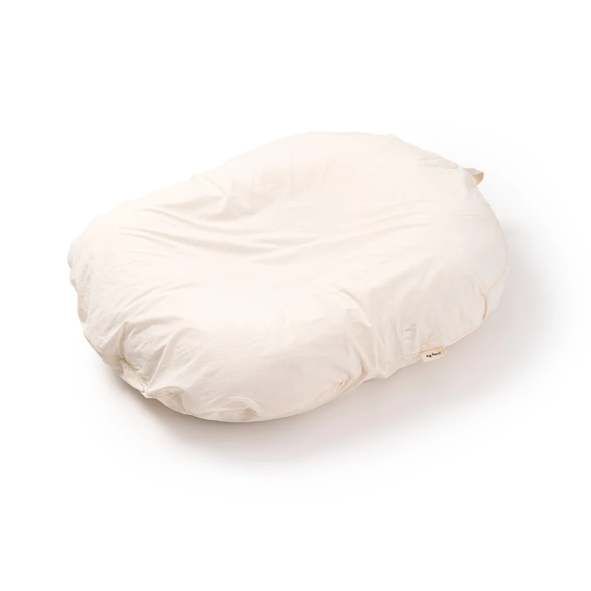
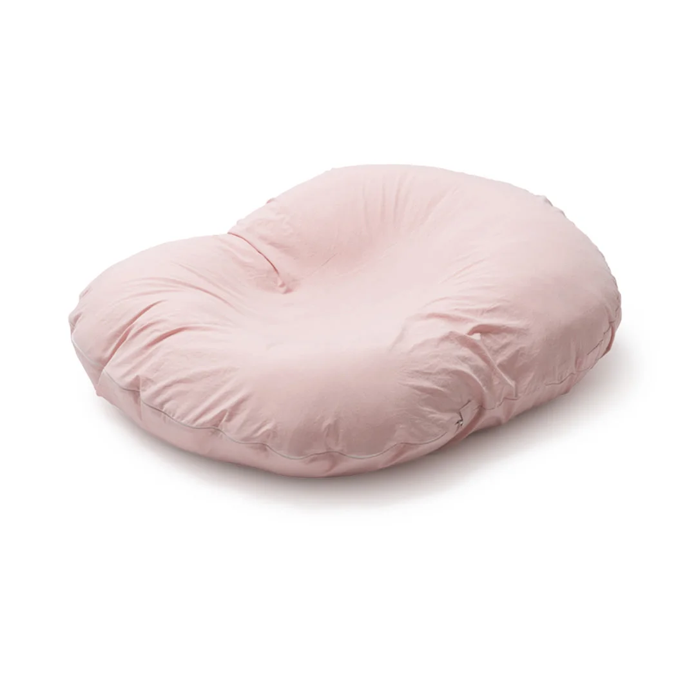
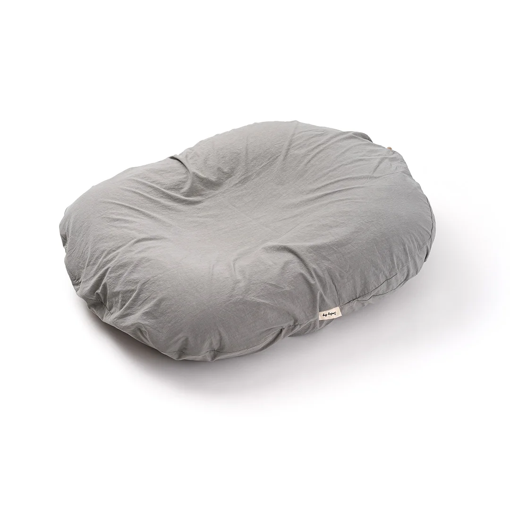
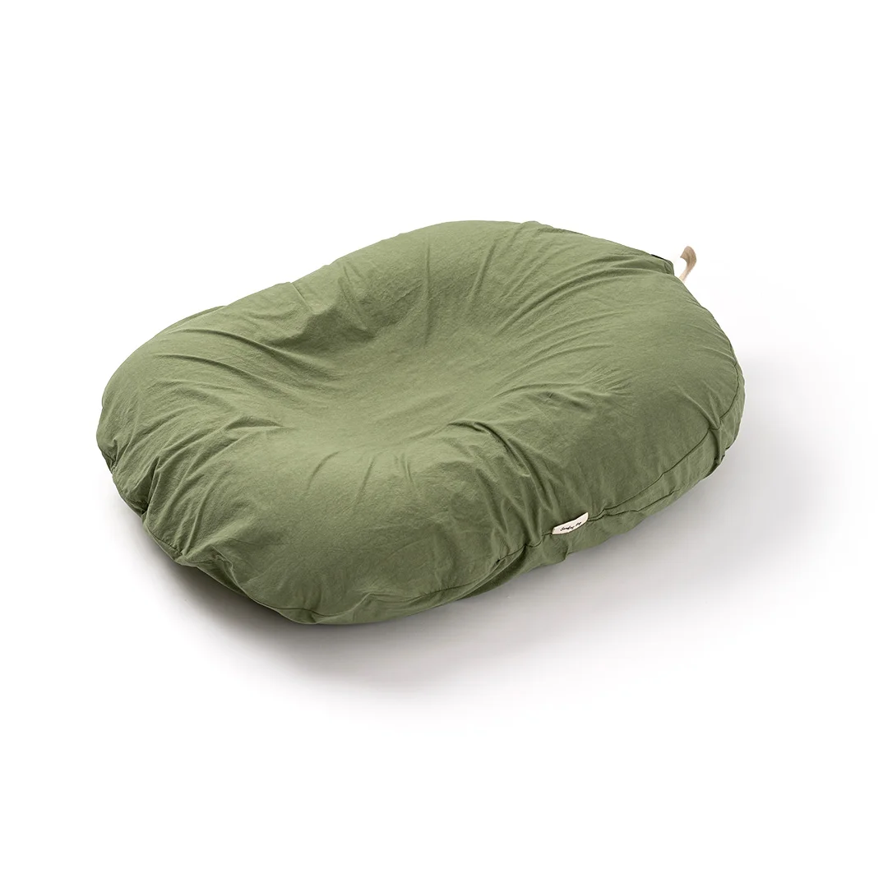
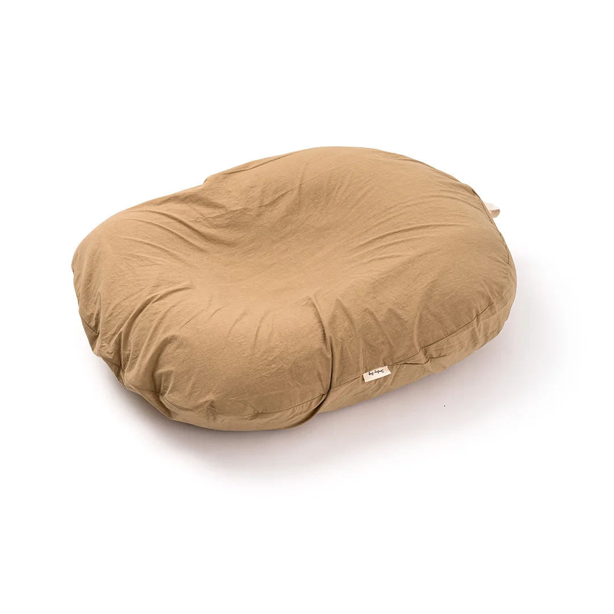
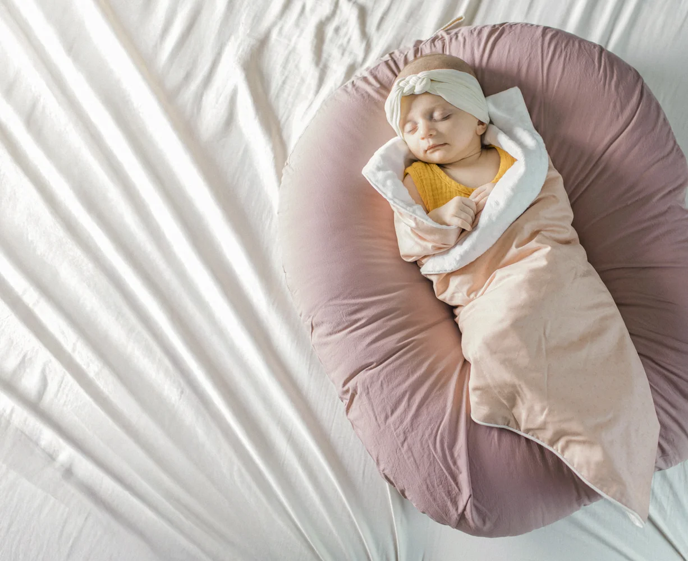
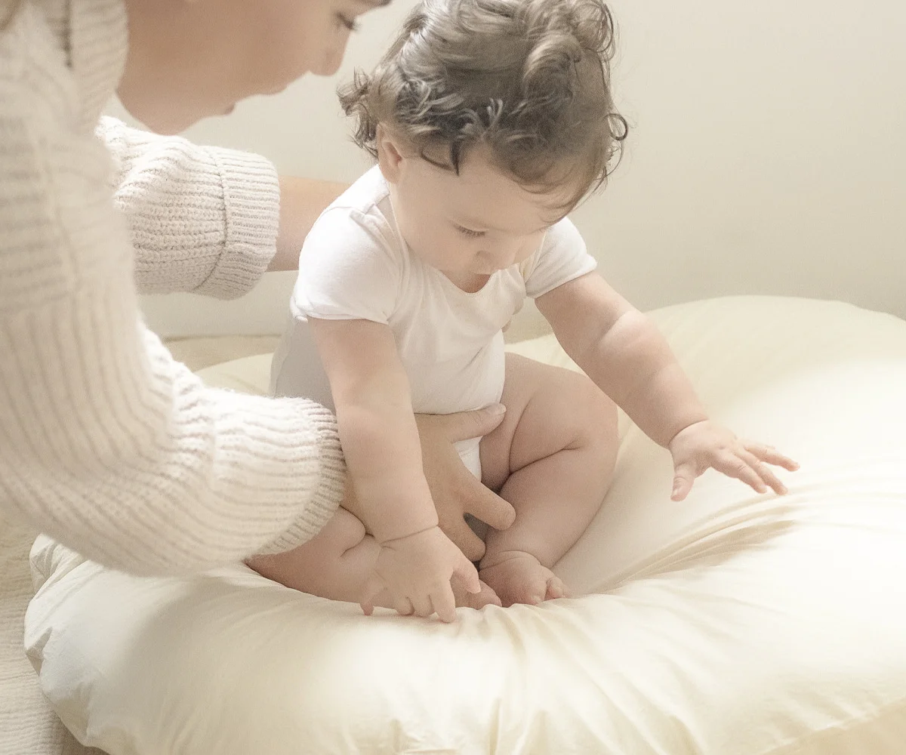

제품 변형 최소화
장시간 담그지 마세요
세탁망 필수
울코스로 단독세탁
건조기 사용 금지
바람이 잘 드는 곳

대형 휴대용 주머니로
편하게 휴대가 가능해요
대형 세탁망으로
통세탁이 가능해요
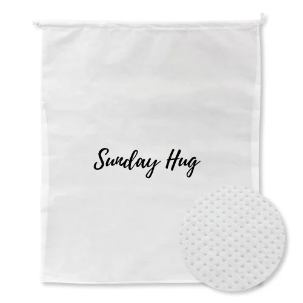

| SIZE | 가로 | 세로 | 높이(두께) |
|---|---|---|---|
| ONE | 55cm | 74cm | 14cm |
| 제품명 | 썬데이허그 듀얼 역류방지쿠션 |
|---|---|
| 사이즈 | 55 x 74 x 14cm (ONE) |
| 색상 | 데일리 크림 / 베이비 핑크 / 어반 그레이 / 올리브 그린 / 어스 브라운 |
| 커버 소재 | 60수 고밀도 원단 |
| 충전재 | 100% 국내산 구슬솜 |
| 제조국 | 대한민국 (100% 국내생산) |
| 세탁방법 | 찬물 손세탁 / 울코스 단독세탁 / 자연건조 |